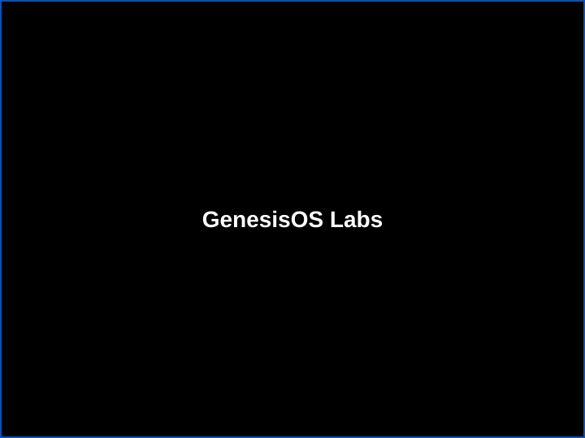

The Genesis System
By GenesisOS Labs
GenesisOS — it works for you
Your personal and team automation workspace
GenesisOS is the product you install or deploy to run GBots, connect tools, and keep work moving—offline, online, or hybrid. You stay in control of data, permissions, and what gets automated next.
What GenesisOS is
GenesisOS is an operating-style environment for automation. Instead of stitching together dozens of one-off scripts, you get a single workspace where GBots can run, hand off results, and plug into the systems you already use.
It is built for people who want power without mystery: clear surfaces for monitoring, predictable places to configure jobs, and a path to add features as you grow.

Request a GenesisOS consultation
Tell us what you run today and what you want to automate. We will follow up with practical next steps.
What you get
Local-first control
Run core automation on your hardware when privacy or policy requires it.
Modular GBots
Add focused capabilities over time—research, operations, customer workflows—without rebuilding your whole stack.
Clear upgrade paths
Move from personal use to team use, and from simple automations to deeper integrations, with guidance from GenesisOS Labs.
How it works
- Install or deploy GenesisOS in the mode that fits your security model.
- Connect data and tools you already rely on.
- Add GBots for repeatable jobs and monitoring.
- Review outputs and tighten permissions as you scale.
Core features
Runs where you need it
Use GenesisOS fully offline for sensitive work, or connect it to cloud services when collaboration matters.
Modular GBots
Add or remove automation modules as your needs change—finance, logistics, research, customer operations, and more.
Built-in task routing
Keep jobs organized: GBots can pass work along, schedule retries, and surface summaries so humans stay in the loop.
Optional digital economy tools
If your roadmap includes GenesisCoin or private currency experiments, we help you enable them with clear scope and review checkpoints.
Mobile app generation
Turn selected workflows into Android-friendly experiences when your users need pocket access—not a replacement for full governance review.
Enterprise-friendly expansion
Add reporting, inventory-aware workflows, multi-team coordination, and dashboards as your organization grows.
The GBots ecosystem
GBots are the focused automation modules inside GenesisOS. They are designed to be understandable: each one should do a clear job with clear inputs and outputs.
Run offline
Keep sensitive processing on your machine when policy requires it.
Run online
Deploy GBots where your team already works, with access controls you define.
Tokenized or not — you choose
GenesisOS is flexible. Many customers start with simple automation only. Others add digital-economy features later. We help you pick a sane path.
Non-tokenized
Automation and reporting without blockchain dependencies.
GenesisCoin
Optional, for teams with a defined on-chain roadmap and legal review.
Private experiments
For tightly scoped pilots—discuss risks and compliance before production.
Ready to scope GenesisOS?
Tell us what you want to automate first—we will respond with clear questions and options.